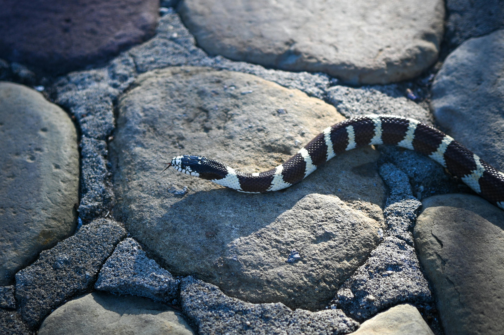
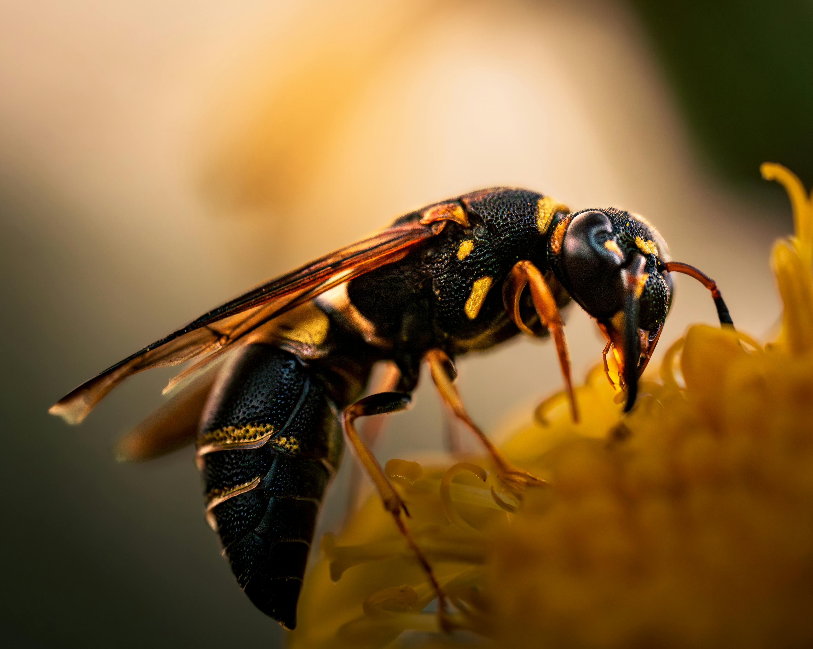
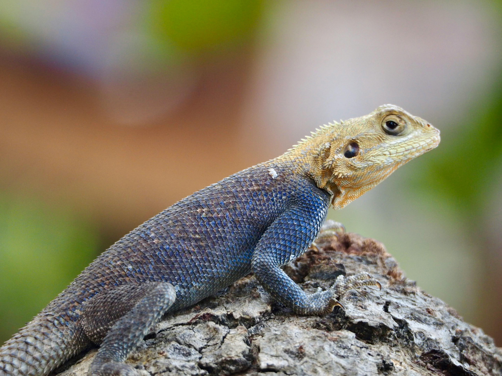

Species Guide
Target Species Monitoring
Specialized recognition for dangerous wildlife encountered on campus. The platform focuses on animals that need fast reporting, careful distance, and clear safety guidance.

Bees & Wasps
Allergy Risk
Lizard
MonitoringAI Predictor
How the AI safety scanner works
The scanner helps students make safer decisions before getting close to unknown wildlife.
1. Upload Image
A student uploads a clear photo of the animal from a safe distance.
2. Model Predicts
Your hosted model receives the image and returns the class plus confidence score.
3. Gemini Explains
A secure Gemini proxy turns the prediction into plain safety guidance and first-aid steps.
4. Take Action
The student keeps distance, follows the guidance, and submits a report if needed.